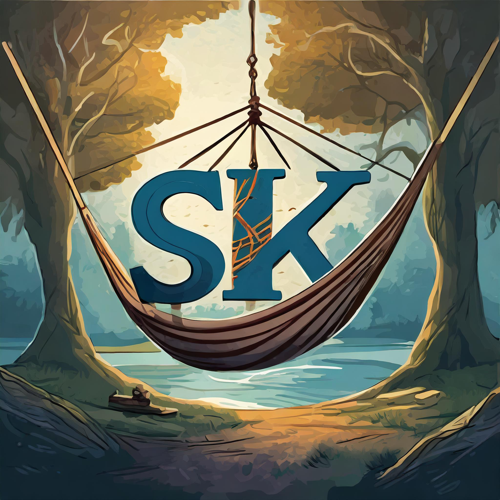

About The Sensational Kangaroo
We are The Sensational Kangaroo, a hammock company based in Northern Aulstralia. Our hammocks are the most comfortable hammocks in the world. They supposedly feel like you are inside of a kangaroos pouch. We even interviewed a joey to get a first hand account that it feels like the inside of a kangaroos pouch. Our product is made up of the highest quality of kangaroo fur. We get off a kangaroo farm in Northern, Australia where we feed them fresh never frozen ground beef. Don't worry we don't harm the kangaroos at all. Six months we sheer our kangaroos and we make sure we do it in a manner that do not bother the kangaroos.
- Our Kangaroos are fed fresh never frozen ground beef.
- The actual fabric of the hammocks are made up of 100% real kangaroo fur.
- All of our shipping is completely free.
- We provide an array of colors such as salmon pink or moonlight blue.
- All of our kangaroos are from Australia.
We want to make sure that we maintain the quiality of product and always provide our best services for out customers. If you have any questions about the company or have an issue with our product don't be afraid to give us a call. Any damage of property that happens during shipping we will either reimburst you or send you a new product. We hope that we can provide you with the most comfortable hammock that you will ever get to experience.
Email: thesensationalkangaroo@gmail.com
Phone Number: 0423-329-123
Address: North Sydney, NSW, 1023 Australia